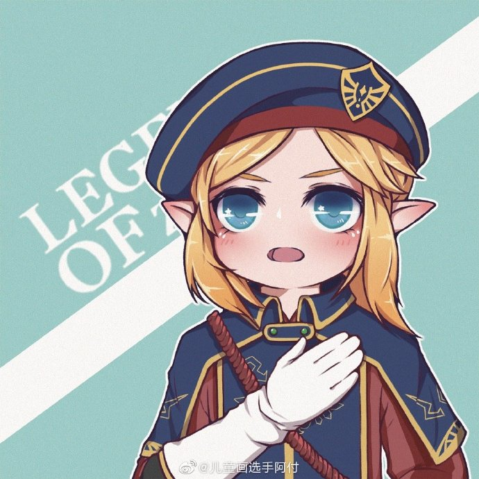
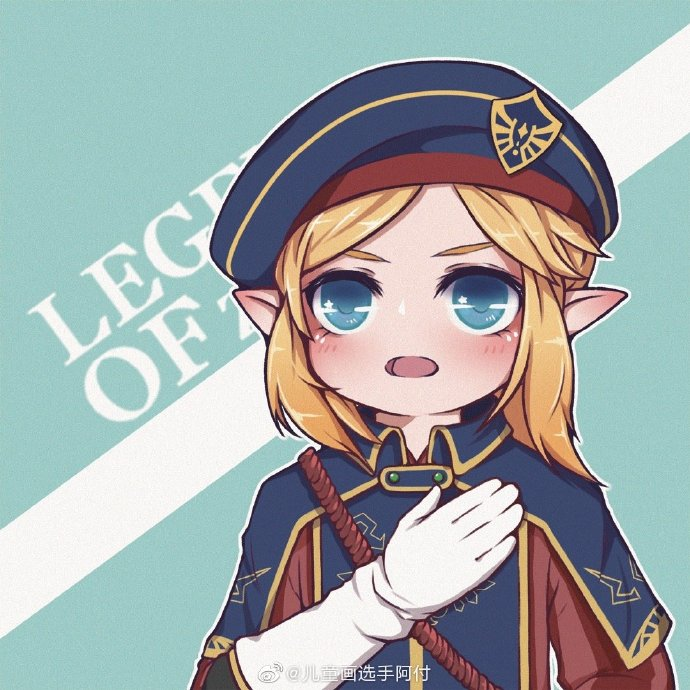
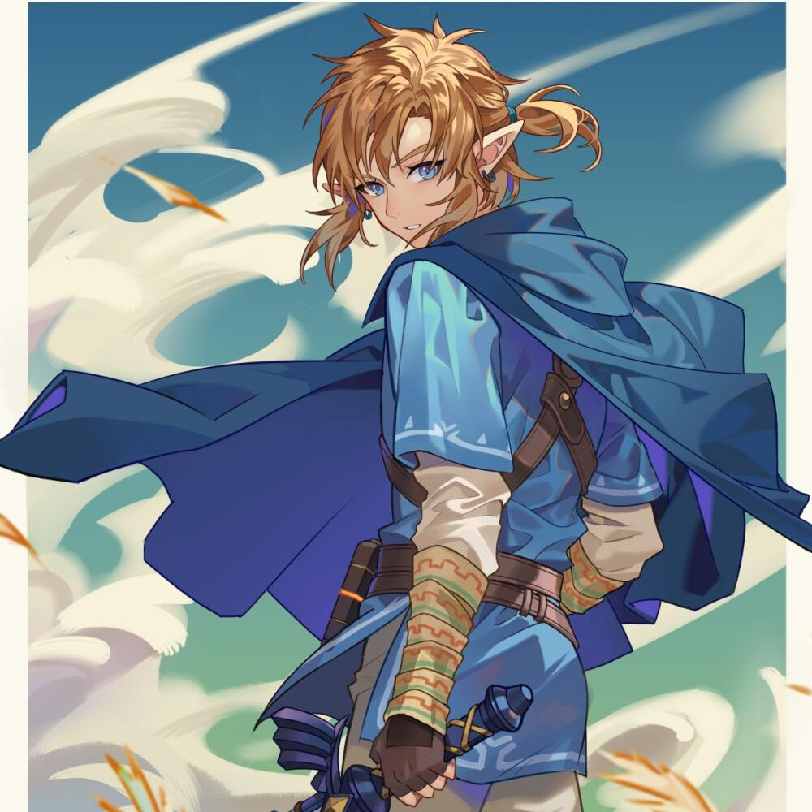
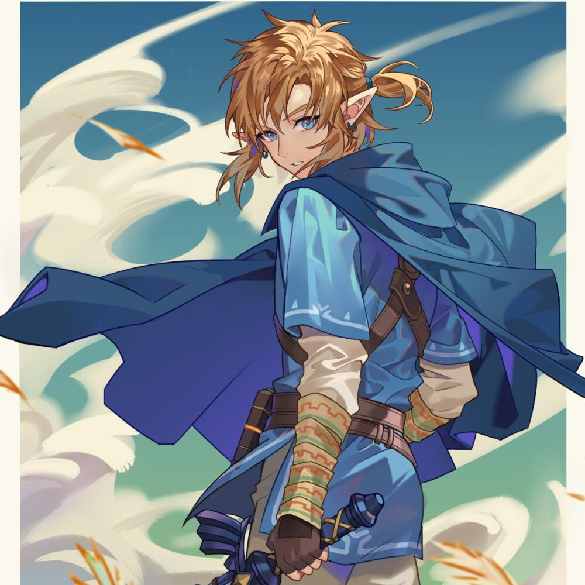

 

林克（日语：リンク，英语：Link）是日本任天堂公司发行的动作冒险游戏《塞尔达传说》系列的角色，由日本游戏设计师宫本茂设计。初次登场于系列第一作《塞尔达传说》中，并出现在该系列的后续作品及改编漫画、动画中。
大部分林克头上穿着具有浓厚绿色的尖帽，类似欧式的精灵与仙子。《旷野之息》中的形象是上身穿着浅蓝色英杰服。
除了以Wii体感操作的《黃昏公主》和《御天之剑》，Switch的《旷野之息》外，林克都是左撇子。宫本茂表示当初在设计初代《塞尔达传说》的林克时把拿剑的手弄错了放在了左手上，后来决定往后如非必要林克都用左手拿剑。
所有塞尔达传说游戏作品中的林克被设定成没有语言能力，不能如其他人物般开口说话，因此林克至今没任何对白。这是因为当初游戏制作者想令玩家将林克视为自己的化身，增加玩家代入感，主角的性格设定及形象塑造留给玩家自己来填补及代入，而不给予林克任何语言能力。